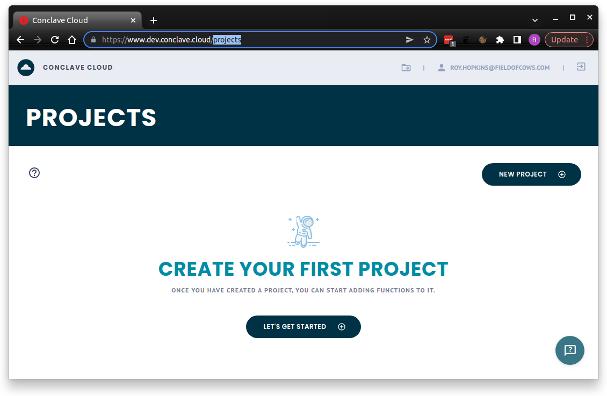

Conclave Cloud Concepts
In order to get started with Conclave Cloud, you need to understand some of the key concepts you will be presented with in the portal and the CLI. Let's start by defining those two:
Conclave Cloud Portal
The portal provides you the tools to manage your Conclave Cloud account and projects in a nice web-based interface.

When you first log in you are presented with a list of existing projects and given the opportunity to create a new project. The definition of a project is below.
Within a project you can check to see which functions you have deployed, how many times they've been called plus lots of other information and metrics about the platform.
If this is your first time in here, create yourself a project and go and explore!
Conclave Cloud Command Line Tool
The "Conclave Cloud Command Line Tool" is known as ccl for short, as this is
the command you enter to invoke it in the terminal or command prompt.
The ccl tool provides all the management options available in the portal, but
on top of this it allows you to upload and invoke functions without writing any
client code. This is great for testing out your functions or trying out the
Conclave Cloud platform.
Enter ccl in your terminal or command prompt to see what commands are
available. There is help available for each command too. For example, this will
give you help for the functions command.
ccl functions --help
Projects
A Conclave Cloud project is a specific configuration of the Conclave Cloud services. At the moment, because Conclave Cloud only provides the Functions service, a project contains a particular set of uploaded functions and shows usage and log data for just those functions.
You can think of a project as an individual application or service. For example, you may have a project for 'Password Manager', or for a larger application you may have projects named 'Project X Payment Processor' and 'Project X User Data'.
When experimenting with the platform, just create yourself a project named 'Test' or whatever you like. You can always delete it when you're finished.
Project UID
When you first open a project in the portal, you will be presented with a value called Project UID.
The project UID is the unique identifier for the current project.
Note: Project names are also unique.
The project UID is not a confidential value. You will need to provide it to the client SDK when you are writing you applications that use Conclave Cloud to tell it which set of functions to use.
Functions
Each project will allow the configuration of a set of functions for invoking using the Conclave Functions service. But what is a function?
A function is a JavaScript code module that exports an entry point. The combination of this code plus the entry point name is uploaded and defines a single 'function' within the Conclave Functions service.
You can upload as many functions as you want to, each obviously designed to perform a different task.
You might find it more convenient to create an npm package and configure it using a tool such as webpack to assemble multiple files or even languages into a single JavaScript file for uploading to functions. In fact, you can even define multiple exported functions from the JavaScript module, then upload the same file multiple times but changing the entry point each time to create multiple functions. This is the approach used by the Conclave Cloud Password sample, so go and take a look at the source code for an example.
Function hashes
You may see reference to function hashes in ccl or elsewhere in the
documentation. These are a really important concept within Conclave Functions
but much of the complexity is hidden from you.
Whenever you upload a function to Conclave Functions, ccl will calculate the
SHA256 has of the JavaScript code with the name of the entry point concatenated
to the end. If the code or entry point is changed then the hash will change.
Whenever an end user wants to invoke a function, they specify the hash of the code and entry point of the function that they expect to be processing their data. Once the Conclave Functions enclave receives the request, it will check the expected hash against the actual hash as calculated inside the enclave and will reject the invocation request if they do not match. This ensures the user is in full-control of what code can access their data.
When using ccl, the tool will automatically use the previously calculated
hash. This is not the most secure way to execute a function because if the hash
changes, the ccl calculation will automatically update and call the function
anyway. To counter this, you can manually provide a hash via the command line.
When using the JavaScript or Java/Kotlin SDKs, you always need to provide the expected hash when invoking a function.